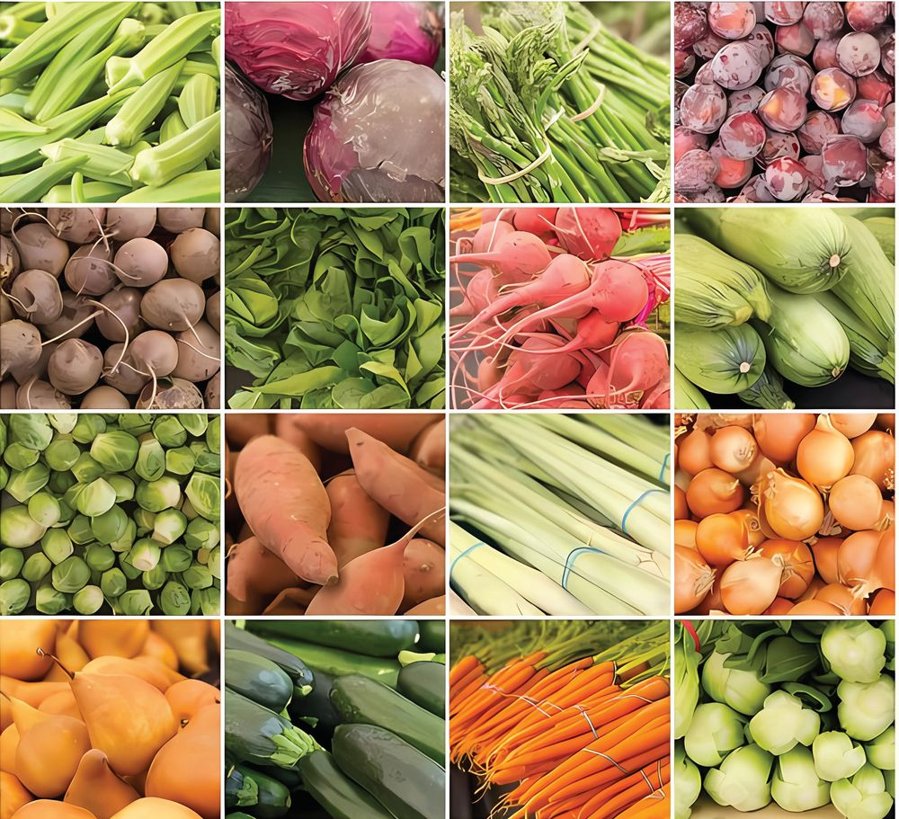
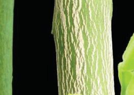
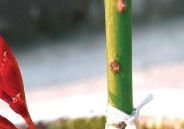
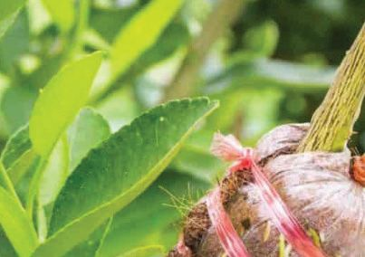
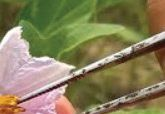
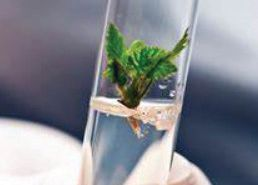
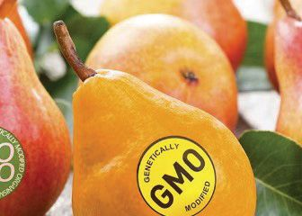
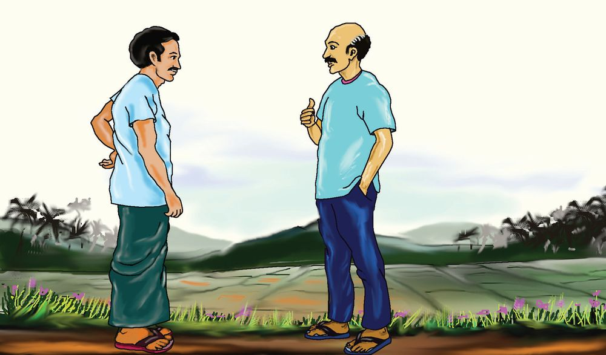
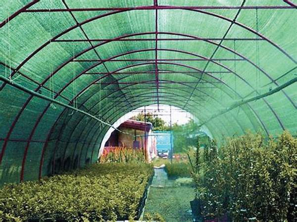
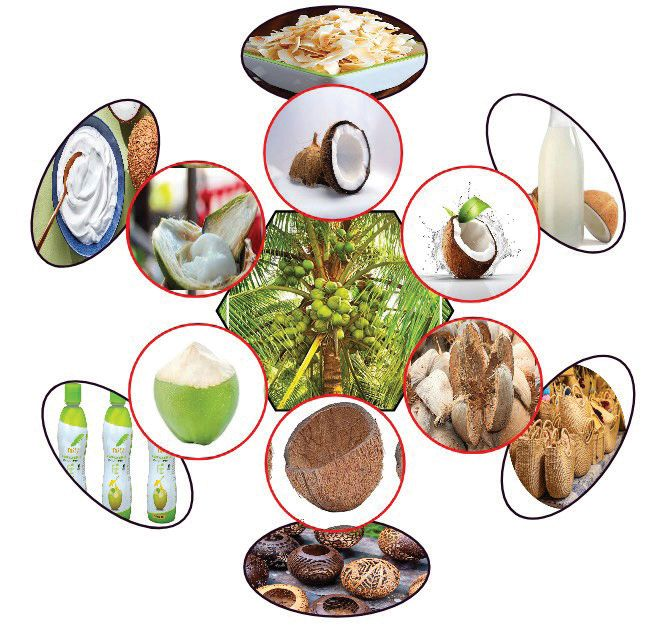

ഗുണമേന്മയുള്ള പച്ചക്കറികൾ ചുരുങ്ങിയ ചെലവിൽ ഉത്പാദിപ്പിച്ച്
സംസ്ഥാനസർക്കാരിന്റെ മികച്ച വിദ്യാാർഥി കർഷകനുള്ള കർഷക
പ്രതിഭ പുരസ്കാരം ഏറ്റുവാങ്ങുന്ന മിടുക്കനെ ശ്രദ്ധിച്ചില്ലേ.
•
ഇത്തരം പുരസ്കാരങ്ങൾ കുട്ടികൾക്ക് നൽകുന്നതിലൂടെ
സർക്കാർ ലക്ഷ്യയമിടുന്നതെന്താണ്?
•
കൃഷിയിൽ ഇതേപോോലെ നേട്ടം കൈവരിച്ച ആരെയെങ്കിലും
നിങ്ങൾക്കറിയാമോോ? കാർഷികമേഖലയിലെ ഏതു പ്രവർ
ത്തനമാണ് അവരെ ശ്രദ്ധേയരാക്കിയത്?
...........................................................................................................................................
ഈ വിദ്യാാര്ഥി കര്ഷകന്റെ അനുഭവക്കുറിപ്പിലെ കുറച്ചുഭാഗം
വായിക്കൂ.
Page 103

Figure fig_ch06_p103_01 (Page 103)
അടിസ്ഥാനശാസ്ത്രം - VIII
ഞാന് എട്ടാം ക്ലാസ്സിലെ ഒരു വിദ്യാാര്ഥിയാണ്. അച്ഛനും അമ്മയും
ഒരു സഹോോദരിയും ഉള്പ്പെട്ടതാണ് ഞങ്ങളുടെ കുടുംംബം.
സ്വവന്തമായൊൊരു വീടുംം പതിനഞ്ച് സെന്റ് പുരയിടവുമാണ്
ഞങ്ങള്ക്കുള്ളത്. അച്ഛൻ ഒരു ചെറുകിടവ്യാപാരിയാണ്.
പഠനപ്രവര്ത്തനങ്ങളുടെ ഭാഗമായി സ്കൂളില്നിന്ന് കൃഷിത്തോോട്ടം
സന്ദര്ശിച്ചപ്പോോഴാണ് എനിയ്ക് കൃഷിയോോട് കൂടുതല് താല്പര്യംം
ഉണ്ടായത്. തുടര്ന്ന് കാര്ഷികമേഖലയിലെ വിദഗ്ധരുമായി
ബന്ധപ്പെട്ട് കൂടുതൽ വിവരങ്ങള് ശേഖരിച്ചു. സ്ഥലപരിമിതി
കണക്കിലെടുത്ത് കൃത്യയമായ ആസൂത്രണം നടത്തിയാണ് കൃഷി
ചെയ്തത്. പയര്, പാവയ്ക, വഴുതന, വെണ്ട, കോോവല്, പുതിന,
ചീര, പച്ചമുളക്, തക്കാളി എന്നീ ഇനങ്ങളാണ് ഞാന് പ്രധാനമാ
യും കൃഷിചെയ്യുന്നത്.
വീട്ടിലെ ആവശ്യം കഴിഞ്ഞ് പച്ചക്കറികള് വില്ക്കാനും കഴിയു
ന്നുണ്ട്. ഒരാഴ്ചയില് ഇങ്ങനെ ഏകദേശം രണ്ടായിരം രൂപ വരെ
ഇതിലൂടെ സമ്പാദിക്കുവാനും സാധിക്കുന്നുണ്ട്.
കൃഷിഭവൻ, ഗ്രാമപഞ്ചായത്ത് ഭരണസമിതി, കൃഷി സഹകര
ണസംഘം എന്നിവയുടെ നിര്ലോോഭമായ പിന്തുണയും സഹ
കരണവും എനിയ്ക്ക് ലഭിക്കാറുണ്ട്. അടുത്തകാലത്തായി ചില
ഓണ്ലൈന് സേവനങ്ങളുംം പ്രയോോജനപ്പെടുത്തിവരുന്നുണ്ട്.
നമ്മുടെ സുഹൃത്തിന്റെ വിജയഗാഥ കേട്ടപ്പോോള് സന്തോോഷം തോോന്നി
യില്ലേ?
ഇതേപോോലെ കൃഷിയുമായി ബന്ധപ്പെട്ട മേഖലകളിൽ വിജയം
കൈവരിച്ച ഒട്ടനവധിപേര് നമ്മുടെ സംസ്ഥാനത്തുതന്നെയുണ്ട്.
നൽകിയിരിക്കുന്ന പത്രവാർത്തകൾ സൂചകങ്ങളുടെ അടിസ്ഥാന
ത്തില് പരിശോാധിച്ച് ഒരു കുറിപ്പ് തയ്യാറാക്കൂ.
103
Page 104
Figure fig_ch06_p104_01 (Page 104)
അടിസ്ഥാനശാസ്ത്രം - VIII
ടാപ്പിയോോക്കപ്ലക്കറിന് പേറ്റന്റ് തേടി സ്കൂൾ വിദ്യാാര്ഥി
മരച്ചീനി വിളവെടുപ്പിന് ലഘുയന്ത്രം വികസിപ്പിച്ച് സ്കൂള് വിദ്യാാര്ഥി മാധ്യയമ
ശ്രദ്ധ പിടിച്ചുപറ്റി. തന്റെ കണ്ടുപിടുത്തത്തിന് പേറ്റന്റിനായി അപേക്ഷിച്ചി
രിക്കുകയാണ് ഈ ലിറ്റില് സയന്റിസ്റ്റ്.
വാഴയിലയിലെ വിജയം
എടപ്പാള്: വാഴക്കുലകള്ക്കുപകരം വാഴയില വിപണനത്തിലൂടെ വിജയ
ത്തിന്റെ പുതുഗാഥ രചിച്ചിരിക്കുകയാണ് എടപ്പാളിലെ ഉന്നത ബിരുദധാരി
യായ യുവകര്ഷകന്. വാഴക്കുലയ്ക്ക് വിലകുറഞ്ഞപ്പോോള് വാഴയില വിൽക്കാ
മെന്ന വേറിട്ട ചിന്തയാണ് അദ്ദേഹത്തെ ഈ സംരംഭത്തിലേയ്ക്ക് നയിച്ചത്.
വിദ്യാാര്ഥിനിയുടെ ഇലക്കറിക്കട
പോോഷകമൂല്യയമുള്ള ഇലക്കറികളുടെ വിപണിസാധ്യയത ഉപയോോഗപ്പെടു
ത്തുന്നതിനായി കോോളേജ് വിദ്യാാര്ഥിനി തുടങ്ങിയ സ്റ്റാര്ട്ടപ്പ് ഒരു വര്ഷം
പൂര്ത്തിയാകുന്നതിനുമുന്പ് വിറ്റുവരവില് റിക്കാര്ഡ്.
മഞ്ഞള്കൃഷിയിലൂടെ സംരംഭകനായി
വയനാട് : രണ്ട് ഏക്കറില് മഞ്ഞള് കൃഷി ചെയ്ത യുവാവ് വിളവെടുപ്പു
സമയത്തെ വിലയിടിവുകാരണം പ്രതിസന്ധിയിലായി. എന്നാൽ, മഞ്ഞളി
ല്നിന്ന് നിരവധി മൂല്യയവര്ധിത ഉൽപന്നങ്ങള് ഉണ്ടാക്കാമെന്ന് തിരിച്ചറി
ഞ്ഞതോോടെ യുവാവ് പുതിയൊൊരു സംരംഭകനായി മാറി.
ഗന്ധകശാലയ്ക്ക് പുതിയ ബ്രാന്റ്
അന്യംനിന്നുപോോകുന്ന ഗന്ധകശാല നെല്ലിനം തനതുരീതിയില് കൃഷി
ചെയ്ത് പ്രത്യേേകം ബ്രാന്റില് വിപണിയിലിറക്കിയതോോടെ നല്ല വിറ്റുവരവു
ണ്ടായി. ഇതില് നിന്നും പ്രചോോദനമുള്ക്കൊൊണ്ടുകൊൊണ്ട് കൂടുതൽ സ്ഥല
ത്ത് കൃഷിയ്ക്കൊൊരുങ്ങുകയാണ് യുവസംരംഭകർ.
സൂചകങ്ങള്
പത്രവാർത്തകളിൽനിന്ന് നിങ്ങള് പുതുതായി മനസ്സിലാക്കിയ
കാര്യയങ്ങള് എന്തൊൊക്കെയാണ്?
പുതുവഴികൾ തെരഞ്ഞെടുക്കുവാൻ കർഷകരെ പ്രേരിപ്പിച്ച
സാഹചര്യയങ്ങൾ എന്തൊൊക്കെയാണ്?
കൃഷി ലാഭകരമാക്കാൻ മറ്റെന്തെല്ലാം സാധ്യയതകളാണുള്ളത്?
104
Page 105
അടിസ്ഥാനശാസ്ത്രം - VIII
നൂതന കാർഷിക സംരംഭങ്ങൾ ഗ്രാമീണ സമ്പദ്വ്യയവസ്ഥയെ ശാക്തീ
കരിക്കുകയും സ്വാശ്രയത്വം വളർത്തുകയും പുതിയ തലമുറയെ കൃഷി
യിലേക്ക് ആകർഷിക്കുകയും ചെയ്യും.
പുതിയൊൊരു സംരംഭം തുടങ്ങുന്നവർക്ക് ഏന്തൊൊക്കെ സഹായങ്ങള്
ലഭിക്കാന് സാധ്യയതയുണ്ട്? നല്കിയിരിക്കുന്ന ചിത്രീകരണം 7.1
പൂര്ത്തിയാക്കൂ.
കൃഷി ഒരു വിജയഗാഥ
ഓൺലൈൻ സംവിധാനം
രോോഗ, കീടബാധ
വിവരശേഖരണം,
പരിഹാരം
വിപണനം
സഹകരണ സംഘങ്ങൾ
കുടുംംബാംഗങ്ങൾ
സാമ്പത്തിക
സഹായങ്ങൾ
തദ്ദേശസ്വവയംഭരണ
സ്ഥാപനങ്ങൾ
കൃഷിഭവൻ
അംഗീകാരം
പരിശീലന
പരിപാടികൾ
ചിത്രീകരണം 7.1
ചിത്രീകരണം കൂടുതല് വിപുലീകരിക്കുവാന് ശ്രമിക്കുമല്ലോോ.
പുതുസംരംഭകരെ
സഹായിക്കുവാന്
സര്ക്കാരിന്റെ ആഭിമു
സ്ഥലം പരമാവധി പ്രയോോജനപ്പെടുത്തല്
ഖ്യയത്തില് എന്തെല്ലാം
കൃഷിചെയ്യാൻ സ്ഥലസൗൗകര്യംം ഇല്ല എന്ന് പരിതപിക്കുന്നവര്ക്കുള്ള പരിപാടികള് ഉണ്ടെ
ഒരു ചൂണ്ടുപലകയാണ് നമ്മുടെ കുട്ടിക്കര്ഷകന് മുന്നോോട്ടുവെയ്ക്കുന്ന ന്ന് വിവരശേഖരണം
നടത്തി ക്ലാസ്സില് അവ
മാതൃക.
തരിപ്പിക്കുമല്ലോോ?
തന്റെ പതിനഞ്ച് സെന്റ് പുരയിടം പരമാവധി പ്രയോോജനപ്പെടുത്തി
യിരിക്കുന്നത് എങ്ങനെയെന്നതിനുള്ള ചില സൂചനകളാണ് ചിത്രം
7.2 ൽ കൊൊടുത്തിരിക്കുന്നത്.
ഓരോോന്നിന്റെയും സാധ്യയതകളുംം പരിമിതികളുംം ചർച്ച ചെയ്യൂ.
സ്ഥലപരിമിതി മറികടക്കാനുള്ള ഒരു നൂതന മാർഗമാണ് വെര്ട്ടി
ക്കൽ ഫാമിംംഗ്. ഇതിന്റെ സാധ്യയതകള് എന്തൊൊക്കെയാണ്?
ചിത്രം 7.3 നിരീക്ഷിച്ച് സൂചകങ്ങളുടെ അടിസ്ഥാനത്തില് ചര്ച്ച
ചെയ്ത് കുറിപ്പ് തയ്യാറാക്കൂ.
ചിത്രം 7.3
സൂചകങ്ങള്
സ്ഥലപരിമിതി മറികടക്കാൻ എങ്ങനെ
സഹായിക്കുന്നു?
പ്രകാശലഭ്യയത ഉറപ്പുവരുത്തുന്നതെങ്ങനെ?
ജലവിനിയോോഗം കുറയ്ക്കാൻ സഹായിക്കുന്ന
തെങ്ങനെ?
നിര്മാണച്ചെലവ്
ചുരുങ്ങിയ ചെലവില് സ്കൂളിലും വീട്ടിലും വെര്ട്ടി
ക്കൽ ഫാമിംംഗ് സംവിധാനം പ്രാവര്ത്തികമാക്കൂ.
നിങ്ങള് നിര്മിച്ച വെര്ട്ടിക്കല് ഫാമിംംഗ് സംവിധാ
നത്തിന്റെ ചിത്രവും അതിന്റെ നിര്മാണത്തെക്കുറി
ച്ചുള്ള ലഘുവിവരണവും ക്ലാസില് അവതരിപ്പിക്കു
മല്ലോോ?
വെർട്ടിക്കൽ ഫാമിംംഗ്
(Vertical Farming)
ലംബമായി അടുക്കിയിരിക്കുന്ന
പാളികളിൽ വിളകൾ വളർത്തുന്ന
ഒരു നൂതന കാർഷിക രീതിയാ
ണിത്. ഹൈഡ്രോോപോോണിക്സ്,
എയ്റോോപോോണിക്സ് സാധ്യയത
കൂടി ഇതിൽ പ്രയോോജനപ്പെടു
ത്താം എന്നതാണ് വെർട്ടിക്കൽ
ഫാമിംംഗിന്റെ സവിശേഷത. പരിമി
തമായ സ്ഥലസൗൗകര്യയമുള്ള നഗര
പ്രദേശങ്ങളിൽപ്പോോലും
ഇത്
പ്രാവർത്തികമാക്കാം. കൃത്രിമമായ
വെളിച്ചം, മഴയേയും വെയിലിനേ
യും പ്രതിരോോധിക്കുന്ന മറ തുട
ങ്ങിയ അനുബന്ധ സംവിധാന
ങ്ങൾ ഒരുക്കിയാൽ കാലാവസ്ഥാ
വ്യയതിയാനങ്ങൾ കണക്കിലെടു
ക്കാതെ കൃഷിചെയ്യാം എന്നതാണ്
ഇതിന്റെ പ്രധാന നേട്ടം.
സസ്യയങ്ങൾക്ക് ആവശ്യയമായ മൂലകങ്ങൾ മണ്ണിൽ നിന്നാണ് ലഭിക്കു
ന്നത്. ഇതിൽ നൈട്രജൻ, പൊൊട്ടാസ്യം, ഫോോസ്ഫറസ്, കാൽസ്യം,
മഗ്നീഷ്യം, സൾഫർ എന്നിവ കൂടിയ അളവിൽ ആവശ്യയമായ മൂലക
ങ്ങളാണ്. ഇവയെ മാക്രോോന്യൂട്രിയന്റുകൾ (Macro nutrients) എന്നു
വിളിക്കുന്നു. എന്നാൽ ബേരിയം, ബോോറോോൺ, സിങ്ക്, കോോപ്പർ,
മാംഗനീസ്, ഇരുമ്പ്, മോോളിബ്ഡിനം, ക്ലോോറിൻ, നിക്കൽ തുടങ്ങിയ
മൂലകങ്ങൾ വളരെ കുറഞ്ഞ അളവിൽ മാത്രമേ ആവശ്യയമുള്ളൂ. ഇവ
മൈക്രോോന്യൂട്രിയന്റുകൾ (Micro nutrients) എന്നാണ് അറിയപ്പെടു
ന്നത്. വിളകൾക്ക് വളരാനാവശ്യയമായ എല്ലാ മൂലകങ്ങളുടേയും
ലഭ്യയത ഉറപ്പുവരുത്താനാണ് വളപ്രയോോഗം നടത്തുന്നത്.
സൂചകങ്ങള്
മാക്രോോന്യൂട്രിയന്റുകളുംം മൈക്രോോന്യൂട്രിയന്റുകളുംം
വളപ്രയോോഗത്തിന്റെ ആവശ്യയകത
നടീലിനു മുമ്പോോ ശേഷമോോ ചില വളങ്ങൾ കൃഷിയിടത്തിൽ വിതറുന്നു.
മറ്റുചിലവ ചെടികളുടെ വേരുകൾക്ക് സമീപം നൽകുന്നു. ദ്രാവക
രൂപത്തിലുള്ള വളങ്ങൾ ഇലകളിൽ തളിക്കുകയും മറ്റുചിലവ വെള്ള
ത്തിൽ കലർത്തി വിളകളിൽ സ്പ്രേ ചെയ്യാറുമുണ്ട്. വിളയുടെയും മണ്ണി
ന്റെയും തരം അനുസരിച്ച് വ്യയത്യയസ്ത രീതികൾ ഉപയോോഗിക്കുന്നത്
മികച്ച വിളവ് ഉറപ്പാക്കുന്നു.
ബയോോബിന്നുകൾ ഉപയോോഗിച്ച് വളരെ ചുരുങ്ങിയ ചെലവില്
ജൈവവളം നിര്മിക്കുന്നതെങ്ങനെയെന്ന് മനസിലാക്കിയിട്ടുണ്ടല്ലോോ?
വീട്ടില് ഇത്തരത്തിലുള്ള ഒരു സംവിധാനം ഒരുക്കുവാന് മുൻകൈ
യെടുക്കുമല്ലോോ?
പലതരം വളങ്ങള് കൃഷിക്ക് ഉപയോോഗപ്പെടുത്തുന്നുണ്ടല്ലോോ?
നൽകിയിരിക്കുന്ന ചിത്രീകരണം 7.2 പൂർത്തീകരിക്കൂ.
108
Page 109
അടിസ്ഥാനശാസ്ത്രം - VIII
ജൈവാവശിഷ്ടങ്ങൾ.
മണ്ണിന്റെ ഘടനയ്ക്കോോ വിഘാടകർക്കോോ ദോോഷം ചെയ്യുന്നില്ല.
വിഘാടകർ ഇവയിൽനിന്ന് സ്വവതന്ത്രമാക്കുന്ന പോോഷകങ്ങളാണ്
സസ്യങ്ങൾക്ക് ലഭിക്കുക.
പോോഷകങ്ങൾ അളവിൽ കുറവായിരിക്കും, വിഘടനപ്രക്രിയയ്ക്ക്
കാലതാമസമെടുക്കും.
കൃത്രിമവളങ്ങൾ
•
•
•
നാനോോ യൂറിയ
നാനോോ ഫോോസ്ഫേറ്റ്
നാനോോ മഗ്നീഷ്യം സൾഫേറ്റ്
വളങ്ങൾ
നാനോോവളങ്ങൾ
ജീവാണുവളം
...............................
•
•
•
റൈസോോബിയം
അസോോസ്പൈറില്ലം
മൈക്കോോറൈസ
................................................
അമോോണിയം ഫോോസ്ഫേറ്റ്
യൂറിയ
അമോോണിയം സൾഫേറ്റ്
•
•
•
•
•
•
•
•
•
നൈട്രജന്, ഫോോസ്ഫറസ് എന്നിവയുടെ സ്ഥിരീകരണത്തിന് സഹായി
ക്കുന്ന സുക്ഷ്മജീവികളെ മണ്ണില് ചേര്ക്കുന്നു.
മണ്ണിന്റെ ഘടനയ്ക്കും വിഘാടകർക്കും ദോോഷം ചെയ്യുന്നില്ല.
•
നാനോോ കണികാരൂപത്തിലുള്ള കൃത്രിമവളങ്ങൾ.
സസ്യയങ്ങൾക്ക് എളുപ്പത്തിൽ ആഗിരണം ചെയ്യാൻ കഴിയും.
മറ്റ് വളങ്ങളെ അപേക്ഷിച്ച് വളരെ ചുരുങ്ങിയ അളവിൽ മതിയാകും.
കൃത്രിമവളങ്ങളെ പോോലെ മണ്ണിന്റെ രാസഘടനയെ മാറ്റുന്നില്ല.
•
•
•
•
•
•
മണ്ണിലെ പോോഷകമൂല്യംം വർദ്ധിപ്പിക്കുവാനായി കൃത്രിമമായി
നിർമിച്ച് ഉപയോോഗിക്കുന്നത്.
സസ്യയങ്ങൾക്ക് എളുപ്പത്തിൽ ആഗിരണം ചെയ്യാൻ കഴിയും.
അമിതമായ വളപ്രയോോഗം മണ്ണിന്റെ ഘടനയ്ക്കും വിഘാടകർക്കും
ദോോഷം ചെയ്യും.
ചിത്രീകരണം 7.2
ഇതുമായി ബന്ധപ്പെട്ട കൂടുതൽ വിവരങ്ങൾ ശേഖരിച്ച് ക്ലാസിൽ
വിവിധയിനം വളങ്ങൾ – മേന്മകളുംം പരിമിതികളുംം എന്ന വിഷയ
ത്തിൽ ഒരു സെമിനാർ പ്രബന്ധം അവതരിപ്പിക്കൂ.
109
പ്രബന്ധം തയ്യാറാക്കുമ്പോോൾ ചുവടെ ചേർത്തിരിക്കുന്ന വസ്തുതകൾ
കൂടി പരിഗണിക്കുമല്ലോോ.
• ഓരോോ തരം വളത്തിന്റെയും സാധ്യയതകളുംം പരിമിതികളുംം.
• മണ്ണ് പരിശോോധനയും വളപ്രയോോഗവും.
• വളപ്രയോോഗവും ജലസേചനവും.
ലീഫ് കളർചാർട്ട്
ധാന്യയവിളകളിൽ നൈട്രജന്റെ ലഭ്യയത എത്രത്തോോളം ഉണ്ടെന്ന് കണ്ടെ
ത്താനുള്ള ഒരു എളുപ്പ മാർഗമാണിത്. ചെടികളുടെ ഇലകളുടെ നിറം
പ്രമാണ ചിത്രവുമായി താരതമ്യയപ്പെടുത്തി നൈട്രജൻ വളങ്ങൾ എത്ര
ത്തോോളം ചേർക്കേണ്ടതുണ്ട് എന്ന് കണ്ടെത്തുവാൻ ഇത് സഹായിക്കുന്നു.
ഇളം പച്ചനിറം നൈട്രജന്റെ കുറവ് സൂചിപ്പിക്കുന്നു. കടുംം പച്ചനിറം
നൈട്രജന്റെ അളവ് ആവശ്യയത്തിനുണ്ട് എന്നും സൂചിപ്പിക്കുന്നു.
ചിത്രം 7.5
കൊൊടുക്കുന്തോോറുമേറിടുംം
സസ്യയങ്ങൾക്ക് ലഭിക്കുന്ന മൂലകങ്ങളെല്ലാം വിവിധ രൂപത്തിൽ
അവയെ ആഹാരമാക്കുന്ന നമുക്കും ലഭിക്കുമല്ലോോ.
ഭക്ഷ്യയയോോഗ്യയമായ 100 ഗ്രാം പച്ചക്കറിയിൽ അടങ്ങിയിരിക്കുന്ന വിവിധ
പോോഷകങ്ങളുടെ അളവ് സംബന്ധിച്ച ഒരു പഠനത്തിൽ നിന്നുള്ള വി
വരങ്ങൾ പട്ടിക 7.1 ൽ നൽകിയിരിക്കുന്നു.
പട്ടികയും വിവരണവും പരിശോോധിച്ചും കൂടുതൽ വിവരങ്ങൾ ശേഖ
രിച്ചും നാടൻ പച്ചക്കറികളുംം ഭക്ഷണത്തിൽ ഉൾപ്പെടുത്തേണ്ടതിന്റെ
ആവശ്യയമെന്തെന്ന് മനസ്സിലാക്കൂ.
പച്ചക്കറി
ചേമ്പില
കറിവേപ്പില
മുരിങ്ങയില
മധുരച്ചീര
കാബേജ്
ബീറ്റ്റൂട്ട്
കോോളിഫ്ളവർ
അന്നജം കാൽസ്യം ഇരുമ്പ്
ഗ്രാം
മി.ഗ്രാം
മി.ഗ്രാം
നാര്
ഗ്രാം
3.9
2.9
6.8
227
10
10278
6.1
6.4
18.7
830
0.93
7560
4
6.7
0.9
12.5
440
0.85
6780
220
6.8
1.4
11.6
570
28.0
5706
247
1.8
1.0
4.6
39
0.8
120
124
1.7
0.9
18.3
18.3
1.19
0
3
2.6
1.2
4.0
33
1.23
30
56
പട്ടിക 7.1
ചിത്രം 7.6
110
കരോോട്ടിൻ
മി.ഗ്രാം
ജീവകം
സി
മി.ഗ്രാം
പ്രോോട്ടീൻ
ഗ്രാം
12
Page 111

Figure fig_ch06_p111_01 (Page 111)

Figure fig_ch06_p111_02 (Page 111)

Figure fig_ch06_p111_03 (Page 111)

Figure fig_ch06_p111_04 (Page 111)

Figure fig_ch06_p111_05 (Page 111)

Figure fig_ch06_p111_06 (Page 111)
അടിസ്ഥാനശാസ്ത്രം - VIII
നാടൻ ഇനങ്ങൾ പ്രാദേശിക പരിസ്ഥിതിയോോട് ഇണങ്ങി
വളർന്നവയായിരിക്കും. അവ ആ പ്രദേശത്തുള്ള കീടങ്ങൾ
ക്കും രോോഗങ്ങൾക്കും എതിരെ സ്വാഭാവികമായും പ്രതിരോോധം
ആർജിച്ചിരിക്കുന്നതിനാൽ കീടനാശിനികളുടെ ഉപയോോഗം
കുറയ്ക്കാം. പ്രാദേശിക പരാഗണകാരികളായ പ്രാണികളെ
നിലനിർത്തുക വഴി പാരിസ്ഥിതിക സന്തുലിതാവസ്ഥയ്ക്കും
ഗുണകരമാണ്. വളങ്ങളുംം വളരെക്കുറച്ചുമാത്രം മതി എന്നതി
നാൽ ചെലവും കുറയ്ക്കാം.
വീട്ടുവളപ്പിൽ ഇത്തരം നാടൻ പച്ചക്കറികൾ വളർത്താൻ കഴിയു
മല്ലോോ. അടുക്കളത്തോോട്ടത്തിൽ നിന്നും പോോഷകത്തോോട്ടത്തിലേയ്ക്കുള്ള
മാറ്റത്തെ ഇത്തരം നാടൻ ഇനങ്ങൾ കൊൊണ്ട് സമ്പന്നമാക്കാമല്ലോോ.
സ്കൂൾ അങ്കണത്തിൽ ഇത്തരമൊൊരു പോോഷകത്തോോട്ടം നിർമ്മിച്ച് അനു
ഭവങ്ങൾ എഴുതൂ.
മികച്ച വിളവിന് മേന്മയുള്ള നടീല്വസ്തുക്കള്
ഗുണമേന്മയുള്ള നടീൽ വസ്തുക്കൾ ഉപയോോഗിക്കുമ്പോോഴേ മെച്ചപ്പെട്ട
വിളവ് ലഭിക്കുകയുള്ളൂ. മെച്ചപ്പെട്ട ഇനം നടീൽ വസ്തുക്കൾ ഉല്പാദി
പ്പിക്കുന്നതിനുള്ള വിവിധ മാർഗങ്ങളെക്കുറിച്ചുള്ള ചിത്രീകരണം 7.3
നിരീക്ഷിച്ച് കുറിപ്പ് തയ്യാറാക്കൂ.
പല പോോഷക ഘടകങ്ങൾ
അടങ്ങിയ അരി തരുന്ന
നെൽച്ചെടി ഉണ്ടായിരുന്നെങ്കില്
എത്ര നന്നായിരുന്നു...
അതെങ്ങനെ സാധിക്കും....?
ചിത്രം 7.7
നിങ്ങൾക്കും ഈ അഭിപ്രായമുണ്ടോോ? ചുവടെ നൽകിയ വിവരണം
വിശകലനം ചെയ്ത് നിഗമനങ്ങൾ രേഖപ്പെടുത്തൂ.
GM വിളകൾ (Genetically modified crops)
ചിത്രം 7.8
ജനിതക എൻജിനീയറിങ് വഴി ജനിതകഘടനയിൽ മാറ്റംവരുത്തി
വിളകളിൽ പുതിയ സ്വവഭാവ സവിശേഷതകൾ ഉൾച്ചേർക്കാൻ സാ
ധിക്കും. കീടബാധ ചെറുക്കുന്ന പരുത്തിച്ചെടി, കളനാശിനികളെ പ്ര
തിരോോധിക്കുന്ന സോോയാബീൻ, വിറ്റാമിൻ A ധാരാളമടങ്ങിയ നെല്ലിന
ങ്ങൾ എന്നിവ ഇത്തരം വിളകൾക്കുദാഹരണങ്ങളാണ്.
ടിഷ്യൂകൾച്ചർ (Tissue culture)
ചിത്രം 7.9
മാതൃസസ്യയത്തിന്റെ അതേ ഗുണസവിശേഷതകളുള്ള ധാരാളം സസ്യയ
ങ്ങളെ ഉത്പാദിപ്പിക്കാൻ സഹായിക്കുന്ന സാങ്കേതിക വിദ്യയയാണി
ത്. സസ്യയത്തിന്റെ അനുയോോജ്യയമായ ഭാഗത്തുനിന്നും കലകളെ വേർ
തിരിച്ചെടുത്ത് പ്രത്യേേക പോോഷക മാധ്യയമത്തിൽ വളർത്തിയാണ്
തൈച്ചെടികളെ ഉണ്ടാക്കുന്നത്.
മാതൃസസ്യയത്തിന്റെ അതേ സ്വവഭാവസവിശേഷതകളുള്ള തൈച്ചെടികളെ ഉല്പാദിപ്പി
ക്കുന്നതിനാണ് ഗ്രാഫ്റ്റിഗ്, ബഡ്ഡിംഗ്, ലെയറിംംഗ്, ടിഷ്യുകള്ച്ചര് എന്നീ മാര്ഗങ്ങള്
സ്വീകരിക്കുന്നത്.
അല്പം പരിശീലനം നേടിയാല് ഗ്രാഫ്റ്റിംഗ്, ബഡ്ഡിംഗ്, ലെയറിംംഗ് എന്നിവ നമുക്കു
തന്നെ ചെയ്യാവുന്നതാണെന്ന് മുന്ക്ലാസ്സുകളില് മനസ്സിലാക്കിയിട്ടുണ്ടല്ലോോ. എന്നാല്
ടിഷ്യുകള്ച്ചര് ചെയ്യാന് കുറേക്കൂടി മികച്ച സാങ്കേതിക പരിജ്ഞാനവും പരിശീ
ലനവും ആവശ്യയമാണ്.
ടിഷ്യൂകള്ച്ചറിനെക്കുറിച്ച് കൂടുതല് വിവരങ്ങൾ ശേഖരിച്ച് ബുള്ളറ്റിന് ബോോര്ഡിലേ
യ്ക്കുള്ള ഒരു കുറിപ്പ് തയ്യാറാക്കുമല്ലോോ?
GM വിളകള്ക്ക് ഒട്ടേറെ ഗുണവിശേഷങ്ങള് ഉണ്ട്. പക്ഷേ, ഇവ തദ്ദേശീയ ഇനങ്ങ
ളുടെ നിലനിൽപിന് ഭീഷണിയാകുന്നുണ്ടെന്ന അഭിപ്രായവുമുണ്ട്. ഇക്കാര്യയങ്ങളെ
ക്കുറിച്ച് ബന്ധപ്പെട്ട മേഖലയിലെ വിദഗ്ദ്ധരുമായി അഭിമുഖം നടത്തി റിപ്പോോർട്ട് തയ്യാ
റാക്കുമല്ലോോ.
112
Page 113

Figure fig_ch06_p113_01 (Page 113)

Figure fig_ch06_p113_02 (Page 113)
അടിസ്ഥാനശാസ്ത്രം - VIII
ജലവിനിയോോഗം
രണ്ട് കർഷകർ തമ്മിലുള്ള സംഭാഷണം ശ്രദ്ധിക്കൂ.
ചിലപ്പോോൾ തോോരാത്ത മഴ,
ചിലപ്പോോൾ തുള്ളിവെള്ളം
പോോലും ഇല്ലാത്ത വരൾച്ച.
എന്തു ചെയ്യും?
നിങ്ങള്
പച്ചക്കറികൃഷി
യൊൊക്കെ
മതിയാക്കിയോോ?
ചിത്രം 7.10
ഈ പ്രശ്നങ്ങള് പരിഹരിക്കുവാൻ നിങ്ങൾക്ക് എന്തെല്ലാം നിർദേശങ്ങ
ളാണ് മുന്നോോട്ടുവയ്ക്കാനുള്ളത്?
• ...................
• ...................
• ...................
ചുവടെ ചേർത്തിരിക്കുന്ന ചിത്രങ്ങൾ നിരീക്ഷിച്ചും ഫീൽഡ്
സന്ദർശനം നടത്തി കൂടുതൽ വിവരങ്ങൾ ശേഖരിച്ചും ചുമർപത്രിക
യിൽ പ്രദർശിപ്പിക്കൂ.
നൽകിയിരിക്കുന്ന വിവരണം വിശകലനം ചെയ്ത് നിങ്ങളുടെ നിർദ്ദേശ
ങ്ങളുടെ സാധുത പരിശോോധിക്കൂ.
ഹരിതഗൃഹം (Green house)
മഴക്കാലത്തും വേനൽക്കാലത്തും ഒരേപോോലെ കൃഷിചെയ്യാൻ സഹാ
യിക്കുന്ന സംവിധാനമാണിത്. പ്ലാസ്റ്റിക്, നൈലോോൺ, പോോളി
എഥിലിൻ തുടങ്ങിയ ഷീറ്റുകൾ ഉപയോോഗിച്ചാണ് ഹരിതഗൃഹം നിർമി
ക്കുന്നത്. എല്ലാ ഭാഗത്തും മറയുള്ളതിനാൽ കീടരോോഗബാധ കുറയ്ക്കാ
നും ഇതിലൂടെ കഴിയും.
ജലത്തെ തുള്ളികളായി വേരുപടലത്തിലേയ്ക് വീഴ്ത്താൻ സഹായി
ക്കുന്ന പൈപ്പുകളുംം വാൽവുകളുംം ഉപയോോഗിച്ചുള്ള ജലസേചനരീ
തിയാണിത്. ഇങ്ങനെ ചെയ്യുമ്പോോൾ ജലനഷ്ടം പരമാവധി കുറയ്ക്കാം.
എല്ലാ ചെടികൾക്കും ഒരേപോോലെ ജലലഭ്യയത ഉറപ്പുവരുത്താനും
കഴിയും.
തിരിനന (Wick irrigation)
ചിത്രം 7.13
പരുത്തിത്തുണികൊൊണ്ടുള്ള തിരിയുടെ സഹായത്താൽ ജലസ്രോോ
തസ്സിൽനിന്ന് ചെടികളുടെ വേരുപടലത്തിന് സമീപത്തേയ്ക് ജലം
നേരിട്ടെത്തിക്കുന്ന രീതിയാണിത്. തുള്ളിനനയെക്കാൾ കുറച്ച് ജലം
മാത്രമേ ഇതിന് വേണ്ടിവരുന്നുള്ളു.
പുതയിടൽ (Mulching)
ബാഷ്പീകരണം നിമിത്തമുള്ള ജലനഷ്ടം കുറക്കുവാൻ കരിയിലകൾ,
വൈക്കോോൽ എന്നിവ ഉപയോോഗിച്ച് കൃഷിയിടങ്ങളിലെ മണ്ണിനെ
ആവരണം ചെയ്യുന്ന പരമ്പരാഗത രീതിയാണിത്. കളകളുടെ വളർച്ച
കുറയ്ക്കുവാനും മണ്ണ് ജൈവസമ്പുഷ്ടമാക്കുവാനും ഇതിലൂടെ കഴിയും.
ചിത്രം 7.14
കീടനിയന്ത്രണം (Pest Control)
ചുവടെ ചേർത്തിരിക്കുന്ന ചിത്രങ്ങൾ ഏതു പ്രശ്നത്തെയാണ് സൂചി
പ്പിക്കുന്നത്? സൂചകങ്ങളെ അടിസ്ഥാനമാക്കി ചർച്ച ചെയ്യൂ.
A. കായതുരപ്പൻ (പയർ)
B. ഇലചുരുട്ടിപ്പുഴു (വെണ്ട)
C. തണ്ടുതുരപ്പൻ (വഴുതന)
ചിത്രം 7.15
സൂചകങ്ങള്
നമ്മുടെ പ്രദേശത്തെ വിളകളെ ബാധിക്കുന്ന പ്രധാനകീടങ്ങൾ
ഏതെല്ലാമാണ്?
കീടങ്ങളെ നിയന്ത്രിക്കുവാൻ നിങ്ങളുടെ പ്രദേശത്തെ കർഷ
കർ സ്വീകരിക്കുന്ന വിവിധ മാര്ഗങ്ങള് ഏവ?
114
Page 115
Figure fig_ch06_p115_01 (Page 115)
അടിസ്ഥാനശാസ്ത്രം - VIII
സംയോോജിത കീടനിയന്ത്രണം
(Integrated Pest Management- IPM)
കീടനിയന്ത്രണത്തിന് വ്യയത്യയസ്തമായ മാർഗ്ഗങ്ങൾ നിലവിലുണ്ടെന്നറിയാമല്ലോോ. കീട
ങ്ങളുടെ സാന്ദ്രത, വിളകളുടെ സ്വവഭാവം എന്നിവ കണക്കിലെടുത്തുവേണം കീടനി
യന്ത്രണമാർഗ്ഗങ്ങൾ തിരഞ്ഞെടുക്കാൻ. മുഴുവൻ കീടങ്ങളേയും കൊൊന്നൊൊടുക്കുക
എന്നതല്ല, വിളകൾക്ക് നാശനഷ്ടമുണ്ടാകാത്ത തരത്തിൽ അവയുടെ പെരുകൽ
നിയന്ത്രിക്കുക എന്നതാണ് കർഷകരുടെ ആവശ്യം. പരിസ്ഥിതിയ്ക്കും ആരോോഗ്യയ
ത്തിനും ദോോഷകരമായ കീടനാശിനികൾ എപ്പോോഴുംം ഇതിനായി ഉപയോോഗിക്കേ
ണ്ടതില്ല. പലതരം വലകളുംം കെണികളുംം കൊൊണ്ടുള്ള യാന്ത്രിക കീടനിയന്ത്രണ
മാർഗ്ഗങ്ങൾ, മിത്രകീടങ്ങൾ, കീടബാധ ചെറുക്കാൻ കഴിവുള്ള വിത്തിനങ്ങളുടെ
കൃഷി എന്നിവയിലൂടെ കീടനാശിനികളുടെ ഉപയോോഗം പരമാവധി കുറയ്ക്കുന്ന
രീതിയാണ് സംയോോജിത കീടനിയന്ത്രണം. കീടങ്ങൾ പെരുകുകയും വിളനഷ്ടം
ഉണ്ടാകാൻ സാധ്യയതയേറുകയും ചെയ്യുന്ന സാഹചര്യയത്തിൽ നിർദ്ദേശിക്കപ്പെട്ട
അളവിലും മുൻകരുതലുകൾ പാലിച്ചും വേണം കീടനാശിനികൾ ഉപയോോഗിക്കേ
ണ്ടത്.
സംയോോജിതകൃഷി (Integrated Farming)
ചിത്രം 7.16
സസ്യയപരിപാലനം മാത്രമാണോോ കൃഷി?
സസ്യയപരിപാലനത്തോോടൊൊപ്പം പക്ഷികൾ, മത്സ്യയങ്ങൾ, മൃഗങ്ങൾ,
എന്നിവയെ വളർത്തുന്നതും കൃഷി തന്നെയല്ലേ? ഇപ്രകാരം വൈവിധ്യയ
മാർന്ന ജീവികളെ ഒരുമിച്ചു പരിപാലിക്കുന്നതാണ് സംയോോജിത
കൃഷി. നിങ്ങളുടെ പ്രദേശത്തെ ഇത്തരത്തിലുള്ള കൃഷിയിടം സന്ദർ
ശിച്ചും ചുവടെ നൽകിയിരിക്കുന്ന ചിത്രീകരണം 7.4 സൂചകങ്ങളുടെ
സഹായത്താൽ വിശകലനം ചെയ്തും സംയോോജിത കൃഷിയെക്കുറിച്ച്
റിപ്പോോർട്ട് തയ്യാറാക്കൂ.
115
ആധുനിക സാങ്കേതിക വിദ്യയകൾ കൃഷിയിൽ ഫലപ്രദമായി പ്രയോോ
ജനപ്പെടുത്തുന്നതാണ് സ്മാർട്ട് ഫാമിംംഗ്. നൽകിയിരിക്കുന്ന പത്ര
വാർത്ത, ചിത്രീകരണം 7.5 എന്നിവ വിശകലനം ചെയ്ത് നിഗമന
ങ്ങൾ രൂപീകരിക്കൂ.
യുവകർഷകൻ ശ്രദ്ധാകേന്ദ്രമാകുന്നു.
എറണാകുളം : ഐ.ടി. മേഖലയിൽ ഉയർന്ന ശമ്പളമുണ്ടായിരുന്ന
യുവാവ് നിലവിലുണ്ടായിരുന്ന തന്റെ ജോോലി ഉപേക്ഷിച്ച് കൃഷിയിൽ
ശ്രദ്ധ കേന്ദ്രീകരിക്കുകയും മികച്ച വിജയം കൈവരിക്കുകയും ചെയ്തി
രിക്കുകയാണ്. കാർഷിക രംഗത്തെ നൂതനരീതികളുംം ഐ.ടി. മേഖല
യിലെ അറിവുകളുംം പ്രയോോജനപ്പെടുത്തിയാണ് ഈ നേട്ടം കൈവ
രിച്ചത്. തന്റെ കൃഷിരീതിയെ സ്മാർട്ട് ഫാമിംംഗ് എന്നാണ് അദ്ദേഹം
വിശേഷിപ്പിക്കുന്നത്.
116
Page 117
അടിസ്ഥാനശാസ്ത്രം - VIII
നിർമിതബുദ്ധി (AI)
വിളകളുമായി ബന്ധപ്പെട്ട ചിത്രങ്ങൾ, വിവര
ങ്ങൾ എന്നിവ പങ്കുവച്ച് നിർമിത ബുദ്ധിയുടെ
സഹായത്താൽ പ്രശ്നപരിഹാര മാർഗങ്ങൾ
കണ്ടെത്താം.
ഇന്റർനെറ്റ് ഓഫ് തിങ്സ്
(IoT)
സെൻസറുകളുടെ സഹായത്താൽ ജലാംശം,
ഫലഭൂയിഷ്ഠത, കീടബാധ എന്നിവ തിരിച്ച
റിഞ്ഞ് യന്ത്രസഹായത്താൽ പ്രശ്നപരിഹാര
സംവിധാനം ഒരുക്കുന്നു.
സ്മാർട്ട്
ഫാമിംംഗ്
ഹൈഡ്രോോപോോണിക്സ്
എയ്റോോപോോണിക്സ്
പോോഷക ലായനിയിൽ സസ്യയങ്ങളെ വളർ
ത്തുകയും സെൻസറുകളുടെ സഹായത്താൽ
പോോഷകങ്ങളുടെ അളവ് തിരിച്ചറിഞ്ഞ് ആവ
ശ്യാനുസരണം ലഭ്യയമാക്കുകയും ചെയ്യുന്നു.
വായുവിലേയ്ക്ക് വളർന്നുനിൽക്കുന്ന വേരുക
ളിലേയ്ക്ക് ജലവും പോോഷകങ്ങളുംം യഥാസമയം
സെൻസറുകളുടെ സഹായത്താൽ ലഭ്യയമാ
ക്കുന്നു.
ചിത്രീകരണം 7.5
വിപണനം
കൃഷിമാത്രം സ്മാർട്ട് ആയാൽ മതിയോോ? ഓൺലൈൻ മാർക്കറ്റിങിന്റെ ഈ കാലഘട്ട
ത്തിൽ കാർഷികോോൽപന്നവിപണനവും സ്മാർട്ടാവേണ്ടതല്ലേ? വിത്തിറക്കുന്നതു മുതൽ
വിളവെടുപ്പ് വരെയുള്ള കാര്യയങ്ങൾ ഉപഭോോക്താക്കൾക്ക് നേരിൽ കാണാനുള്ള സംവി
ധാനം ഒരുക്കിയാൽ, ഉൽപന്നങ്ങളുടെ വിശ്വാസ്യയതയും വിപണിമൂല്യയവും വർദ്ധിപ്പിക്കാനാ
വില്ലേ? കൃഷിയിടങ്ങളിലെ സെൻസറുകൾ, ഡ്രോോണുകൾ, AI ക്യാമറകൾ എന്നിവയിലൂടെ
ഇത് എളുപ്പത്തിൽ സാധ്യയമാക്കാം. ഉൽപന്നങ്ങളെ ലോോകമെമ്പാടുമുള്ള ഉപഭോോക്താക്ക
ളിലേക്ക് നേരിട്ട് എത്തിക്കാനും ഇതിനാകും. ഭൗമസൂചിക പദവി ലഭിച്ചിട്ടുള്ള ഉൽപന്ന
ങ്ങളുടെ ആഗോോള വിപണന സാധ്യയത വർദ്ധിപ്പിക്കുവാനും ഇതിലൂടെ സാധിക്കും.
ഭൗമസൂചിക പദവി (Geographical Indication)
കേരളകശുവണ്ടിക്ക് ഭൗമസൂചികാ പദവിക്ക് ശ്രമം
കൊൊല്ലം : കേരളത്തിൽ ഉൽപാദിപ്പിക്കുന്ന കശുവണ്ടിക്ക് 'കേരള
കശുവണ്ടി' എന്ന പേരിൽ ഭൗമസൂചികാ പദവി നേടാൻ ശ്രമം
തുടങ്ങി. കേരള സംസ്ഥാന കശുമാവ് വികസന ഏജൻസി സ്പെഷ്യയൽ
ഓഫീസർ നൽകിയ ശുപാർശയുടെ അടിസ്ഥാനത്തിലാണ് നടപടി.
കേന്ദ്ര വാണിജ്യയ - വ്യയവസായ മന്ത്രാലയമാണ് പദവി അംഗീകരിക്കേ
ണ്ടത്.
പത്രവാർത്ത ശ്രദ്ധിച്ചില്ലേ? കൃഷി ചെയ്യുന്ന ഭൂപ്രദേശത്തിന്റെ സവി
ശേഷതയ്ക്കനുസരിച്ച് ഉൽപന്നങ്ങളുടെ രുചി, നിറം, മണം, പോോഷക
ഗുണം എന്നിവയ്ക്ക് വ്യയത്യാസങ്ങൾ ഉണ്ടാകും. ഇതിന്റെ അടിസ്ഥാന
ത്തിലാണ് ചില പ്രദേശങ്ങളിലെ ഉൽപാദിപ്പിക്കുന്ന കാർഷികോോല്പന്ന
ങ്ങൾക്ക് ഭൗമസൂചിക പദവി ലഭിക്കുന്നത്. ഇത്തരം ഉൽപന്നങ്ങൾ
ക്ക് വിപണിയിൽ അധികമൂല്യംം ലഭിക്കുന്നു.
ഭൗമസൂചികാപദവി ലഭിച്ച ചില കാർഷിക ഉൽപന്നങ്ങൾക്കുള്ള
ഉദാഹരണമാണ് കൊൊടുത്തിരിക്കുന്നത്. ഇത്തരത്തിലുള്ള കൂടുതല്
ഉൽപന്നങ്ങള് കണ്ടെത്തൂ.
പാലക്കാടൻ മട്ടയരി
മലബാർ കുരുമുളക്
കൊൊടുങ്ങല്ലൂർ പൊൊട്ടുവെള്ളരി
കുറ്റ്യാാട്ടൂര് മാങ്ങ
തിരൂർ വെറ്റില
ചിത്രം 7.17
കൃഷിയിലെ വൈവിധ്യം
ഭക്ഷ്യയവസ്തുക്കൾ ഉത്പാദിപ്പിക്കുന്നതുമാത്രമാണോോ കൃഷി?
നൽകിയിരിക്കുന്ന കൊൊളാഷ് (ചിത്രീകരണം 7.6) സൂചകങ്ങളുടെ
അടിസ്ഥാനത്തിൽ വിശകലനം ചെയ്ത് കുറിപ്പ് തയ്യാറാക്കൂ.
118
Page 119
Figure fig_ch06_p119_01 (Page 119)
അടിസ്ഥാനശാസ്ത്രം - VIII
ഇലവാഴക്കൃഷി
ഉദ്യാാനക്കൃഷി
പക്ഷിവളർത്തൽ ഔഷധസസ്യയക്കൃഷി
വെറ്റിലക്കൃഷി
പുഷ്പകൃഷി
അലങ്കാര
മത്സ്യയക്കൃഷി
ഓമനമൃഗങ്ങളെ
വളർത്തൽ
ചിത്രീകരണം 7.6
സൂചകങ്ങള്
കൃഷിയുടെ വൈവിധ്യയവല്ക്കരണം കൊൊണ്ടുള്ള പ്രയോോജനങ്ങള്
എന്തെല്ലാം?
ഇവയില് സ്ഥലപരിമിതി ഉള്ളവർക്കുപോോലും ചെയ്യാൻ പറ്റുന്ന
കൃഷിയിനങ്ങള് ഏതെല്ലാം?
കര്ഷകര്ക്കായി മൊൊബൈൽ ആപ്പുകൾ
കാലാവസ്ഥാ മുന്നറിയിപ്പുകള്, കീട-രോോഗബാധാ മുന്നറിയിപ്പുകള്,
കൃഷിസംബന്ധിയായ വിദഗ്ധോോപദേശങ്ങള്, വിപണി വിലനിലവാരം,
കർഷകർക്കുള്ള ആനുകൂല്യയങ്ങളെക്കുറിച്ചുള്ള വിവരങ്ങള് എന്നിവയെ
ല്ലാം ലഭിക്കുന്ന ആപ്പുകളുണ്ട്.
ഇത്തരം സൗൗകര്യയങ്ങൾ ശരിയായ രീതിയിൽ പ്രയോോഗപ്പെടുത്തിയാൽ
കാർഷിക മേഖല കൂടുതൽ കരുത്താർജ്ജിക്കും.
എല്ലാവർക്കും പോോഷകസമ്പുഷ്ടമായ ഭക്ഷണം ഉറപ്പാക്കുക എന്നത്
ഒരു വെല്ലുവിളിയാണ്. ജനസംഖ്യയ അനുദിനം വർധിച്ചുവരികയും
ആഹാരശീലങ്ങൾ മാറിവരികയും ചെയ്യുന്ന സാഹചര്യയത്തിൽ
കൃഷിയുടെ വ്യാപനവും ആധുനികവൽക്കരണവും അതീവപ്രാധാന്യയ
മർഹിക്കുന്നു.
119
Page 120
Figure fig_ch06_p120_01 (Page 120)
അടിസ്ഥാനശാസ്ത്രം - VIII
വിലയിരുത്താം
(1) ബോോക്സ് A, B എന്നിവയില് നല്കിയിരിക്കുന്ന വിവരങ്ങളെ
2) സതീഷിന് 15 സെന്റ് പുരയിടവും 30 സെന്റ് നെൽപാടവുമുണ്ട്.
നെല്കൃഷികൊൊണ്ട് വേണ്ടത്ര മെച്ചമില്ല എന്നാണ് അദ്ദേഹം പറയു
ന്നത്. പുരയിടവും പാടവും ഉപയോോഗപ്പെടുത്തിക്കൊൊണ്ടുള്ള കൃഷി
ലാഭകരമാക്കുവാന് നിങ്ങള്ക്ക് എന്ത് നിര്ദേശമാണ് നല്കാനു
ള്ളത്?
3) കൂട്ടത്തില് പെടാത്തതേത്? മറ്റുള്ളവയുടെ പൊൊതുസവിശേഷതകള്
എന്ത്?
a) തിരിനന, വെര്ട്ടിക്കല്ഫാമിംംഗ്, ഡ്രിപ്പ്ഇറിഗേഷന്, പുതയിടല്
b) ഹൈഡ്രോോപോോണിക്സ്, അക്വാപോോണിക്സ്, എയ്റോോപോോണി
ക്സ്, ഭൗമസൂചിക
4)
120
'കീടങ്ങളെ മുഴുവൻ കൊൊന്നൊൊടുക്കിയാലേ ക-ൃഷി ലാഭകരമാകൂ.'
കർഷകന്റെ ഈ അഭിപ്രായത്തോോട് നിങ്ങളുടെ പ്രതികരണം
എന്താണ്? എങ്ങനെ ഫലപ്രദമായ കീടനിയന്ത്രണം നടപ്പാക്കാം?
Page 121
Figure fig_ch06_p121_01 (Page 121)

Figure fig_ch06_p121_02 (Page 121)
അടിസ്ഥാനശാസ്ത്രം - VIII
(5) ചിത്രീകരണം നിരീക്ഷിക്കൂ.
ചിപ്സ്
തേങ്ങാപ്പാൽ ക്രീം
വിനാഗിരി
തെങ്ങിൽ നിന്നുള്ള
മൂല്യയവർദ്ധിത
ഉൽപന്നങ്ങൾ
കയർ ഉൽപ്പന്നങ്ങൾ
പാനീയം
കരകൗൗശലവസ്തുക്കൾ
a) ഇങ്ങനെയുള്ള ഉല്പ്പന്നങ്ങള് ഉണ്ടാക്കുന്നതുകൊൊണ്ട് കര്ഷകര്ക്കുള്ള
നേട്ടമെന്ത്?
b) മറ്റേതെങ്കിലും വിളയുടെ സമാനമായ ചിത്രീകരണം തയ്യാറാക്കുക.
തുടർപ്രവർത്തനങ്ങൾ
1) നിങ്ങളുടെ പ്രദേശത്ത് സാധാരണയായി കണ്ടുവരുന്ന സസ്യയരോോഗങ്ങള് ഏതെല്ലാമാ
ണെന്ന് കണ്ടെത്തുക. അവയുടെ രോോഗകാരികള്, രോോഗപ്പകര്ച്ചാ രീതി, രോോഗലക്ഷണ
ങ്ങള്, പരിഹാരമാര്ഗങ്ങള് എന്നിവ പട്ടികപ്പെടുത്തി ഒരു സചിത്രചാര്ട്ട് തയ്യാറാക്കി
ബുള്ളറ്റിന് ബോോര്ഡില് പ്രദര്ശിപ്പിക്കുക.
2) കേരളത്തിലെ പ്രധാന കാര്ഷികഗവേഷണസ്ഥാപനങ്ങള് അവ കാര്ഷിക മേഖല
യില് നല്കിയ സംഭാവനകള് എന്നിവയെക്കുറിച്ച് വിവരശേഖരണം നടത്തി പട്ടിക
തയ്യാറാക്കുക.
3) കാർഷികമേഖലയിൽ ജോോലിഭാരം കുറയ്ക്കുവാനും മറ്റുംം നിരവധി യന്ത്രങ്ങൾ ഉപയോോഗി
ക്കുന്നുണ്ടെന്ന് നിങ്ങൾക്കറിയാമല്ലോോ. കർഷകരുടെ പ്രയാസങ്ങൾ എങ്ങനെ ലഘൂക
രിക്കാമെന്നു ചിന്തിച്ചതിന്റെ പരിണതഫലങ്ങളാണ് ഇന്ന് കാണുന്ന മിക്ക യന്ത്രസംവി
ധാനങ്ങളുടെയും കണ്ടെത്തലിലേക്ക് നയിച്ചത്. നിങ്ങളുടെ പ്രദേശത്തെ കർഷകർക്ക്
ഉപകാരപ്രദമാകുന്ന ഒരു നവീന ഉപകരണത്തിന്റെ മാതൃക രൂപകൽപന ചെയ്യൂ.
121